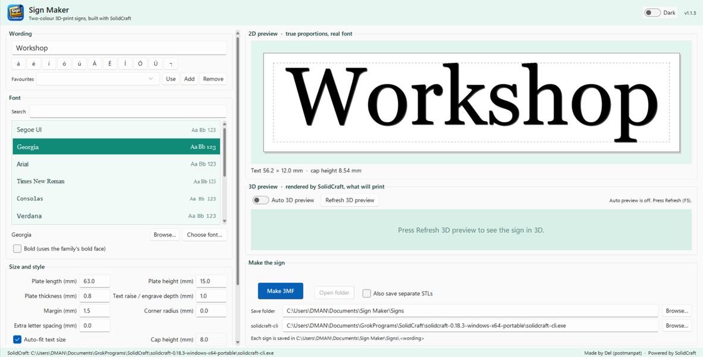
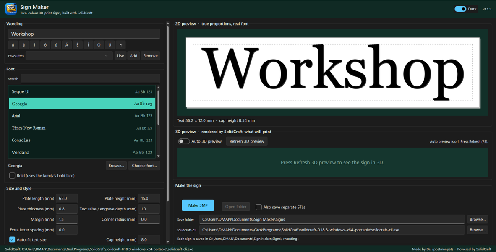
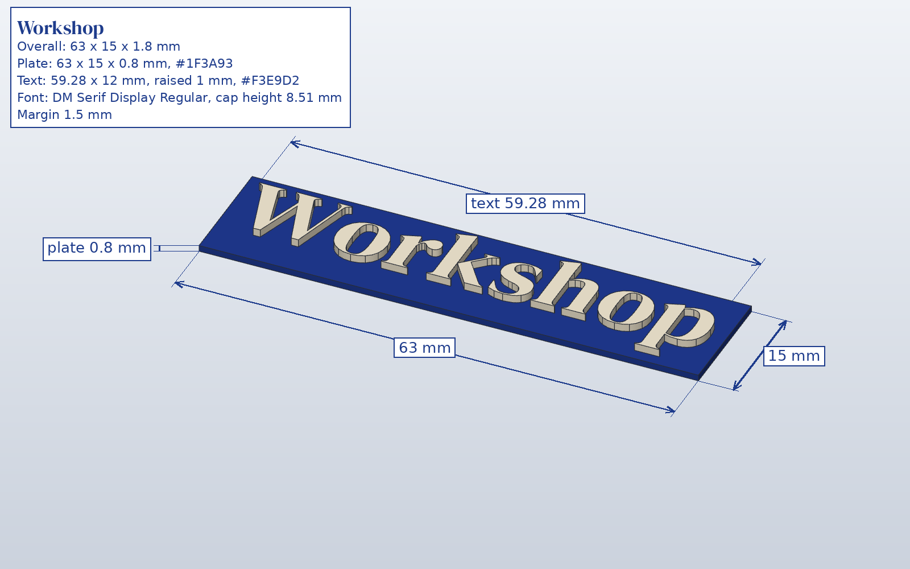
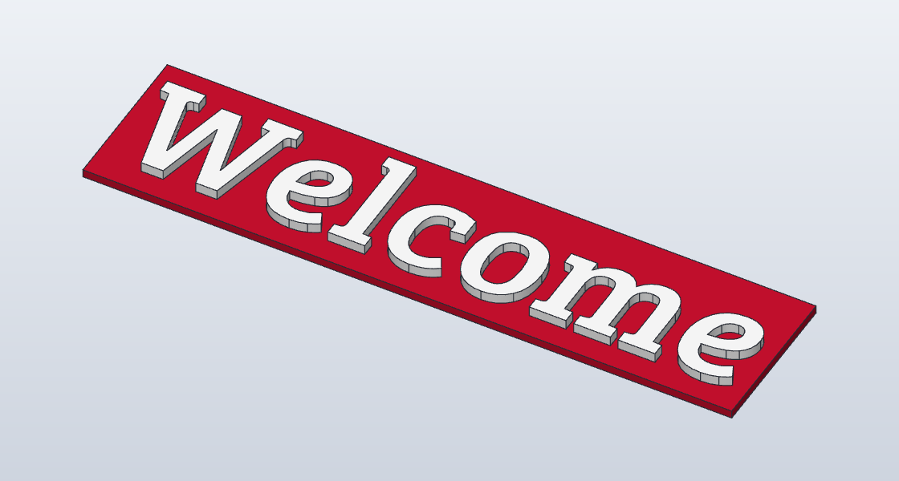

Unofficial add-on for SolidCraft
Sign Maker for SolidCraft
Type a line of text, pick a font, and export a two-colour 3D-print sign that drops straight into your slicer.
Windows · macOS · Linux · Free and open source (MIT) · Plate on filament 1, text on filament 2
Watch it in action
Type it, print it: a two-colour 3D-print sign in one click, from the first letter to the slicer.
Download
Choose your platform. The installers and bundles are built automatically for every release.
macOS 11+
Apple silicon. Unsigned, so right-click the app and choose Open the first time.
Get the Mac buildSolidCraft is a separate install. Sign Maker drives SolidCraft's headless solidcraft-cli to build and preview the model — the 2D preview works without it. The Windows setup is not code-signed, so SmartScreen may say “Windows protected your PC”: choose More info, then Run anyway.
What it does
A small, focused tool: one line of text, real measurements, two colours, and a file your slicer understands.
One line, any font
Pick any installed font, or browse to a .ttf, .otf or .ttc. Bold uses the family’s own bold face.
Real dimensions
Plate, thickness, raise, margin, corner radius and letter spacing — with auto-fit so the text always fits inside the margins.
Two colours
Plate and text colours from swatches, presets, or any #RRGGBB you like, including engraved inlays.
Instant 2D preview
True proportions, drawn from the real font file, so you see the sign before SolidCraft is even involved.
Live 3D preview
SolidCraft’s own render of the sign that will print, rebuilt in the background a moment after you stop typing.
Slicer-ready 3MF
One object, two parts: Plate on filament 1 and Text on filament 2, already in place.
The Make button
A little steam while it builds
Press Make 3MF. A few small wisps curl off the button for about four seconds while the sign is built, then fade away. No confetti, no fuss.
Go on — press it.
Screenshots
The window below is the real app. Click any picture for the full size.








What’s new
Full notes for every release are on the releases page.
-
1.1.5
Press Make 3MF and a few small wisps curl off the button for about four seconds, then fade away. The saved-file twinkle is still there.
-
1.1.4
The Make 3MF button twinkles when the file has been saved — a quiet “that worked” that only appears on success.
Before you start
Sign Maker is the friendly front end; SolidCraft does the modelling.
SolidCraft, with its CLI
Install SolidCraft from its releases page. On Windows use the MSI or the portable zip — the single-file exe has no CLI. If it isn’t found, point Sign Maker at solidcraft-cli with Browse.
Or run from source
Python 3.10 or newer, then pip install -r requirements.txt and start run.bat, run.command or run.sh.